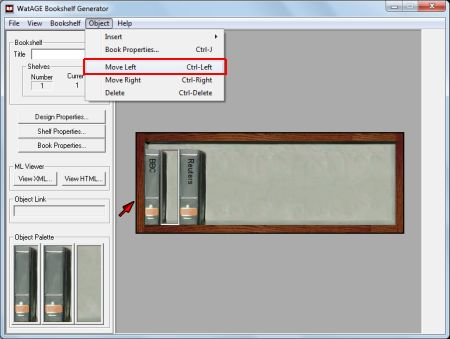
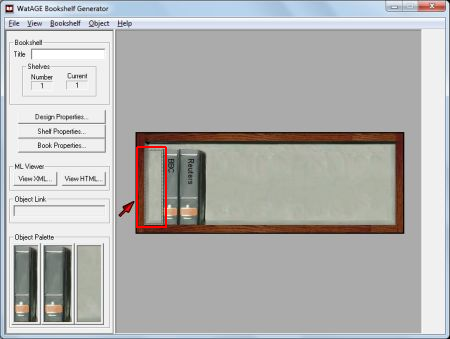

> Working with Spaces >
Moving a space left or right
7.4. Moving a space left or right
To move a space left or right on a shelf:
- Select the space you want to move.
- On the Object menu, click Move Left or Move Right.
The space is moved as specified.
